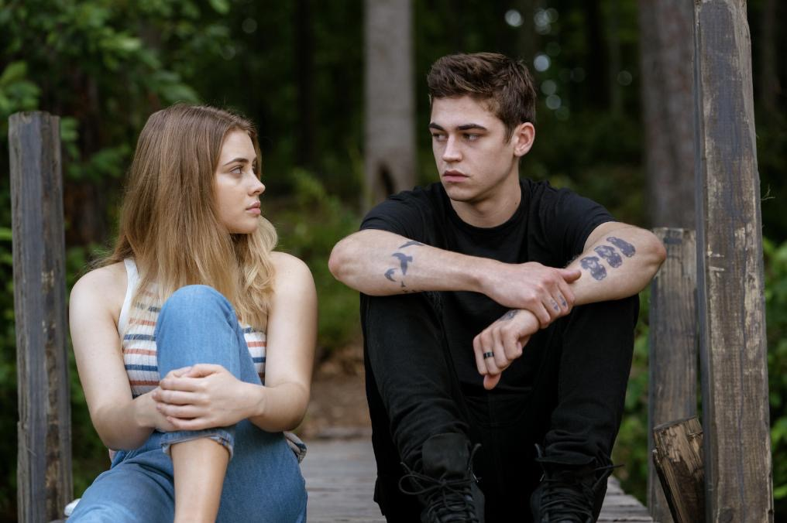

HERE 'S THE BEST WEBSITE TO FIND THE BEST MOVIES AND SERIES DESCREPTION
If you are bored let me present you a list of the best series/movies in my opinion
Which type do you prefer
Fantasy and science fiction
Action
Romantic
HORROR
Comedy
Tragedie and Drama
List of movies
LET'S START WITH THE FANTASY ONE
Harry potter
Harry Potter is a series of seven fantasy novels written by British author J. K. Rowling. The novels chronicle the lives of a young wizard, Harry Potter, and his friends Hermione Granger and Ron Weasley, all of whom are students at Hogwarts
School of Witchcraft and Wizardry. The main story arc concerns Harry's struggle against Lord Voldemort, a dark wizard who intends to become immortal, overthrow the wizard governing body known as the Ministry of Magic and subjugate all
wizards and Muggles
Fantastic beaasts
In mid-1920s New York, Newt Scamander, a British young activist wizard, arrives in the city, holding a mysterious leather suitcase that shelters diverse and magical creatures that exist among us. Amid an already fragile equilibrium of secrecy,
and the increasing disasters ascribed to the dark wizard, Gellert Grindelwald, Newt's precious suitcase goes missing, and to make matters worse, several creatures manage to escape. Before long, this unforeseen complication catches Senior
Auror Percival Graves' attention who targets Newt, against the backdrop of an invisible, devastating, and utterly unpredictable menace that still wreaks havoc on 5th Avenue. In the end, is there a hidden agenda behind Graves' intentions
Moreover, what will happen to the remaining fantastic beasts that are still on the loose?
The amazing spider man
We've always known that Spider-Man's most important conflict has been within himself: the struggle between the ordinary obligations of Peter Parker and the extraordinary responsibilities of Spider-Man. But in The Amazing Spider-Man 2, Peter
Parker finds that his greatest battle is about to begin. It's great to be Spider-Man. For Peter Parker, there's no feeling quite like swinging between skyscrapers, embracing being the hero, and spending time with Gwen. But being Spider-Man
comes at a price: only Spider-Man can protect his fellow New Yorkers from the formidable villains that threaten the city. With the emergence of Electro, Peter must confront a foe far more powerful than he. And as his old friend, Harry
Osborn, returns, Peter comes to realize that all of his enemies have one thing in common: Oscorp.
Cruella
a young grifter named Estella, a clever and creative girl determined to make a name for herself with her designs. She befriends a pair of young thieves who appreciate her appetite for mischief, and together they are able to build a life for
themselves on the London streets. One day, Estella's flair for fashion catches the eye of the Baroness von Hellman, a fashion legend who is devastatingly chic and terrifyingly haute, played by two-time Oscar (R) winner Emma Thompson ("Howards
End," "Sense & Sensibility"). But their relationship sets in motion a course of events and revelations that will cause Estella to embrace her wicked side and become the raucous, fashionable and revenge-bent Cruella.
Now we gonna talk about some series
The vampire diaries
e series is set in the fictional town of Mystic Falls, Virginia, a town charged with supernatural history. It follows the life of Elena Gilbert (Nina Dobrev), a teenage girl who has just lost both parents in a car accident, as she falls in
love with a 162-year-old vampire named Stefan Salvatore (Paul Wesley). Their relationship becomes increasingly complicated as Stefan's mysterious older brother Damon Salvatore (Ian Somerhalder) returns, with a plan to bring back their
past love Katherine Pierce (also played by Dobrev), a vampire who looks exactly like Elena. Although Damon initially harbors a grudge against his brother for forcing him to become a vampire, he later reconciles with Stefan and falls in
love with Elena, creating a love triangle among the three. Both brothers attempt to protect Elena as they face various villains and threats to their town, including Katherine. The brothers' history and the town's mythology are revealed
through flashbacks as the series goes on.
The originals
mily is power. The Original Vampire family swore it to each other a thousand years ago. They pledged to remain together, always and forever. Now, centuries have passed and the bonds of family are broken. Time, tragedy and hunger for power
have torn the Original Family apart. When Klaus Mikaelson, the original vampire-werewolf hybrid, receives a mysterious tip that a plot is brewing against him in the supernatural melting pot that is the French Quarter of New Orleans, he
returns to the city his family helped build. Klaus' questions lead him to a reunion with his diabolical former protege, Marcel, a charismatic vampire who has total control over the human and supernatural inhabitants of New Orleans.
Teen Wolf
Teen Wolf revolves around Scott McCall, a high school student living in the fictional California town of Beacon Hills. Scott becomes the eponymous teenage werewolf of the series after he is bitten by an alpha werewolf the night before his
second year of high school, drastically changing his once-ordinary life. The bite forces him to balance his new identity with his day-to-day teenage life and eventually help protect his hometown, which he learns is a beacon for supernatural
activity. Scott begins the series as a relatively unpopular and unathletic student who lives with his divorced mother Melissa, a nurse at Beacon Hills Memorial Hospital. As a werewolf, he develops heightened physical abilities and senses
well beyond those of an ordinary human, but he also must control animalistic instincts that are amplified by feelings of aggression and full moons. Further complicating matters, Scott develops romantic feelings for new classmate Allison
Argent, who comes from a family of werewolf hunters that includes her father Chris Argent. Helping Scott manage his new life are his best friend Stiles Stilinski, the son of Beacon Hills Sheriff Stilinski, and the natural-born werewolf
Derek Hale. The supernatural events surrounding Beacon Hills also end up affecting Lydia Martin, a popular and intelligent student who discovers that she is a banshee, and Jackson Whittemore, the captain of the school's lacrosse team who
resents Scott's newfound attention. As new and familiar threats emerge, Scott is joined by werecoyote Malia Tate, kitsune Kira Yukimura, and Scott's first beta werewolf Liam Dunbar in keeping his family, friends, and the rest of the town
safe. Cast and characters
Shadow Hunters
On her 18th birthday, Clary Fray is accepted into the Brooklyn Academy of Arts. That evening, while out celebrating with her best friend, Simon Lewis, Clary sees a group of suspicious people that nobody else can see. She follows them into
the back room of the club, witnessing a fight. She interferes, grabbing a blade. Believing she has accidentally committed a murder, Clary is distraught and immediately rushes home. Her mother, Jocelyn Fray, then reveals invisible inkings
on her own skin, similar to those worn by the group at the club. Knowing she will be attacked, Jocelyn fears for Clary's safety, asking their friend Dot to send her through a portal to Luke, her only father figure. However, when she arrives,
Clary believes Luke has betrayed her, leading to her returning to her apartment. When she arrives, she finds her mother missing, and a monstrous Dot asking her about a Mortal Cup. Clary is saved by a blond boy from the club, who seems
to know more about herself than she does. She joins up with a group of Shadowhunters, half angel half human, to save her mother from the villainous Valentine Morgenstern, Clary's own father, and discovers powers she never knew she possessed.
Clary is thrown into the world of demon hunting with the mysterious, narcissistic, and attractive Shadowhunters Jace, Isabelle and Alec and drags her loyal and geeky friend Simon along for the ride. Now living amongst the fair folk, warlocks,
vampires, and werewolves, Clary begins a journey of self-discovery as she learns more about her past and what her future may hold
Game of thrones
Game of Thrones is an HBO series that tells the story of a medieval country's civil war. The series, which premiered in April 2011, is set on the fictional continents of Westeros and Essos in a world where seasons stretch on for years. When
the story begins, a decade-long summer is ending, and winter looms as characters battle to claim the "Iron Throne," the seat of the king of the Seven Kingdoms, the regime that rules all but the northern tip of Westeros. In show parlance,
"sit on the Iron Throne" is a metonym equivalent to "rule Westeros."
I'm going to talk about some romantic movies now
💗
After
Tessa Young begins her freshman year of college by moving into her dorm room with her mother, Carol, and her boyfriend, Noah. During this process, she meets Steph, her new roommate, and her girlfriend, Tristan. The day after, Tessa shares
a brief encounter with Steph's friend, Hardin Scott. The next day, Steph persuades Tessa to attend a party where she meets Steph's other friends, Zed, Molly, and Jace, and meets Hardin for the second time. The group play truth or dare,
revealing, in turn, Tessa's virginity; she is dared to kiss Hardin but refuses. Later at the party, Hardin attempts to kiss Tessa, but she rejects his advances and leaves.and the story continous

The fault in our stars
Seventeen-year-old Hazel Grace Lancaster reluctantly attends a cancer patients' support group at her mother’s behest. Because of her cancer, she uses a portable oxygen tank to breathe properly. In one of the meetings she catches the eye of
a teenage boy, and through the course of the meeting she learns the boy’s name is Augustus Waters. He's there to support their mutual friend, Isaac. Isaac had a tumor in one eye that he had removed, and now he has to have his other eye
taken out as well. After the meeting ends, Augustus approaches Hazel and tells her she looks like Natalie Portman in V for Vendetta. He invites Hazel to his house to watch the movie, and while hanging out, the two discuss their experiences
with cancer. Hazel reveals she has thyroid cancer that has spread to her lungs. Augustus had osteosarcoma, but he is now cancer free after having his leg amputated. Before Augustus takes Hazel home, they agree to read one another’s favorite
novels. Augustus gives Hazel The Price of Dawn, and Hazel recommends An Imperial Affliction.
five feet apart
Seventeen-year-old Stella spends most of her time in the hospital as a cystic fibrosis patient. Her life is full of routines, boundaries and self-control -- all of which get put to the test when she meets Will, an impossibly charming teen
who has the same illness. There's an instant flirtation, though restrictions dictate that they must maintain a safe distance between them. As their connection intensifies, so does the temptation to throw the rules out the window and embrace
that attraction.
Now ladies and gentilman let's move to the HORROR part
Siccin
Öznur is a young and beautiful woman. She has had a platonic love since childhood to Kudret, who is her cousin. Kudret, however, is married to a woman named Nisa and is very happy. Jealous, Öznur uses terrible black magic to change this so
that she and Kudret will be together. However, she is not prepared for the evil that this spell unleashes.
Train TO Bussan
Seok-Woo (Gong Yoo) is a fund manager in Seoul. He is separated from his wife and lives with his daughter Soo-An (Kim Soo-Ahn). Seok-Woo doesn't spend much time with his daughter or show affection to her. On the night before Soo-An's birthday,
Soo-An insists on seeing her mother for her birthday. Seok-Woo has no other choice, but to take her to Busan. Early the next morning, they board the KTX train for Busan at Seoul Station. Before the KTX train leaves Seoul Station, a zombie
like girl jumps onto the train. The girl is infected with a horrific virus that is spreading like wildfire. Seok-Woo, Soo-An and the other passengers on the KTX train must now fight for their lives.
The cojuring 3
The Devil Made Me Do It reveals a chilling story of terror, murder and unknown evil that shocked even experienced real-life paranormal investigators Ed and Lorraine Warren. One of the most sensational cases from their files, it starts
with a fight for the soul of a young boy, then takes them beyond anything they'd ever seen before, to mark the first time in U.S. history that a murder suspect would claim demonic possession as a defense.
The mimic
The plot is inspired by the South Korean urban legend of the Jangsan Tiger, a man-eating creature that roams around Jangsan, a mountain in the city of Busan. It is rumored to have sharp teeth and white fur and moves swiftly through mountains
and lures people by making a sound that resembles a woman's wail.[4]
Now do you want some action
Let's start with my favourite one
The maze runner
A teen wakes up in a clearing in the center of a gigantic maze with no memory of his past, finding himself a resident in community of boys who have built a village in the glade and who sends two of its strongest and fittest runners into
the maze every morning to find a way out.
The k2
Kim Je-ha (an alias) is a former mercenary soldier for the PMC Blackstone. While in Iraq, he gets framed for the murder of his lover Raniya, a civilian. As a result, he runs away and becomes a fugitive. He returns to South Korea and by
chance is offered work as a bodyguard by Choi Yoo-jin, the owner of JSS Security Company and wife of presidential candidate Jang-Se joon. He accepts the job in exchange for resources that he needs to get his revenge on another presidential
candidate, Park Kwan-soo, who previously ordered Raniya's killing. Je-ha is assigned to guard Go An-na, the hidden daughter of Jang Se-joon whose life is always threatened because of Yoo-jin, her stepmother. An-na, who has been a recluse
and lonely all her life, starts relying on Je-ha, who shows concern for her and protects her at all costs. They slowly fall in love, causing Je-ha to be torn between having to work with his ally, Yoo-jin, to enable him to take revenge
on Park Kwan-soo and protecting his new found love, An-na, against his own ally. Another key protagonist is Choi Yoo-Jin's half brother, Choi Sung-won, the son of her father's mistress and eventual second wife, who is his half-sister's
fierce rival. Plotting with Park Kwan-soo, he eventually causes the deaths of Jang Se-joon and Choi Yoo-jin but later pays for this with his life at the hands of Choi Yoo-Jin's devoted (and ruthless) assistant Kim Dong-mi. Je-ha achieves
his goal of revenge, with Park hanging himself for his atrocious acts and Je-ha clearing his name. The series ends with Je-ha and An-na embracing in a foreign country, with An-na asking Je-ha what his real name is and Je-ha about to
reveal it.
Enough action let's move to some comedy and have some fun LOL
Minions
Minions are small, yellow creatures who have existed since the beginning of time, evolving from yellow single-celled organisms into beings which exist only to serve history's most evil masters, but they accidentally end up killing
all their masters —including a Tyrannosaurus, a caveman, a Pharaoh, and Count Dracula.— They are driven into isolation after firing a cannon at Napoleon while in Russia and start a new life inside a cave, but after many years,
the Minions become sad and unmotivated without a master to serve. To regain their dignity and sense of purpose, a minion named Kevin recruits two Minions called Stuart and Bob, setting out to look for a new master. In 1968, the
three journey to New York City, where they end up in a department store for the night, and accidentally discover a hidden commercial broadcast for villains advertising Villain-Con; a convention for all villains and supervillains
in Orlando. The next day they manage to hitchhike a ride with the Nelsons, a family of thieves. At the convention, they see Scarlet Overkill, an incredibly famous and popular supervillainess who unexpectedly hires them and takes
them to her home in London. They phone the rest of the Minions to get them to join. Scarlet plans to steal the Imperial State Crown from Queen Elizabeth II and promises to reward the Minions if they steal it, and kill them if they
do not. Her husband, Herb, supplies them with inventions to aid in the heist, but they are nearly caught when they break into the Tower of London. The chase leads to Bob accidentally crashing into the Sword in the Stone by pulling
it free to defend himself and his friends, causing Bob to remove the Queen from the throne and become King. Enraged that someone else accomplished her dream of stealing the throne, Scarlet confronts the Minions, so Bob abdicates
the throne in her favor. Undeterred, Scarlet imprisons the three in a dungeon before her coronation and Herb attempts to torture the trio, but they escape with the intention to apologize to Scarlet. After making their way to Westminster
Abbey, Stuart and Bob interrupt the coronation by inadvertently dropping a chandelier on Scarlet, who survives the falling fixture and orders their execution. Stuart and Bob are captured by other villains, while Kevin hides in
a pub. He sees Scarlet on television, promising that she will kill Stuart and Bob if Kevin does not show up by dawn. With the villains still searching for him, Kevin sneaks into Scarlet's castle to steal weapons, and accidentally
triggers a machine Herb was building and grows into a gigantic Minion. Kevin tramples through London, rescues his friends and battles Scarlet just as the other Minions turn up in London. Scarlet tries to eradicate them by firing
a massive missile, but Kevin swallows it. Scarlet and Herb attempt to escape with her rocket dress only for Kevin to hold onto it and get pulled into the sky. The missile finally explodes, seemingly killing Kevin, Scarlet, and
Herb. As the Minions mourn the loss of their leader, Kevin survives and returns to his normal size. The Queen gets her throne and crown back. She rewards Bob with a tiny crown for his teddy bear Tim, Stuart with an electric guitar,
and Kevin with a knighthood. The still alive Scarlet and Herb steal the crown again, but a young Gru uses a freeze ray on them and flees with the crown on a rocket-powered motorbike. The Minions run after him, deciding he is the
boss they were looking for.
Very bad trip / The hang over
Doug Billings, a cheerful but clumsy bachelor, travels to Las Vegas with his three best friends Phil Wenneck, who is a sarcastic Elementary School teacher, Stu Price, who is an easygoing dentist, and Alan Garner, who is the hyperactive
son of Sid, the gruff father of Doug's fiancée Tracy, in Alan's vintage Mercedes-Benz W111 to have his bachelor's party. They get a suite in Caesars Palace, and celebrate with drinks on the hotel rooftop. The next morning, Phil,
Stu, and Alan awaken to find they have no memory of the previous night; Doug is nowhere to be found, Stu's tooth is missing, the suite is a disaster, a tiger is in the bathroom, a chicken is in the living room, and a baby is in
the closet. They see Doug's mattress impaled on a statue outside of Caesars Palace and when they ask for their Mercedes, the valet delivers an LVPD police cruiser. Retracing their steps, the trio travel to a hospital where they
discover they were drugged with Rohypnol, causing their memory loss, and that they went to the hospital from a chapel the previous night. At the chapel, they learn that Stu married a stripper named Jade, despite being in a long-term
relationship with his domineering and philandering girlfriend Melissa. Outside the chapel, the trio is attacked by gangsters saying they are looking for someone. They flee and track down Jade. They are then arrested by the police
for having stolen the police cruiser. After being told that the Mercedes was impounded, the trio are released when they unwittingly volunteer to be targets for a taser demonstration. While driving the Mercedes, they discover a
naked Chinese man named Mr. Chow in the trunk, who beats the trio with a crowbar and flees. Alan confesses that he drugged their drinks to ensure they had a good night, believing the drug to be ecstasy. Returning to their suite,
they find Mike Tyson, who orders them to return his tiger to his mansion. Stu drugs it, they load it into the Mercedes, and drive to Tyson's mansion. However, the tiger awakens midway and attacks them, clawing Phil on the neck
and damaging the car's interior. They push the car the rest of the way to the mansion, and successfully deliver the tiger to Tyson. While driving back, their car is rammed by a black Cadillac Escalade manned by the gangsters from
the chapel and Chow, who is their boss. Chow accuses them of kidnapping him and stealing $80,000 in poker chips. As they deny it, he tells them he has Doug, and threatens to kill him if it is not returned. Unable to find Chow's
$80,000, Alan, with help from Stu and Jade, uses his knowledge of card counting to win $82,400 playing blackjack. The next morning, they meet Chow in the desert to exchange the chips for Doug, only to find that it is actually "Black
Doug", who sold the roofies to Alan the previous night. With Doug's wedding set to occur in five hours, Phil calls Tracy to tell her they cannot find Doug. Simultaneously, Black Doug mentions that someone who takes roofies is more
likely to end up on the floor than on the roof; Stu suddenly realizes where Doug is, interrupting Phil before he can reveal Doug's disappearance to Tracy. They travel back to Caesars Palace where they find a dazed and sunburned
Doug on the roof, who they moved there on his mattress the previous night as a practical joke; Doug threw the mattress onto the statue in an attempt to signal for help. Before leaving, Stu makes arrangements to go on a date with
Jade the following week. With no flights available to Los Angeles, the four drive home to the wedding. Despite their late arrival, Doug and Tracy are married. At the wedding, Stu breaks up with Melissa, sick of her personality.
Alan then finds Stu's digital camera containing photos of the events from the night in Las Vegas, and the four agree to look at the pictures before deleting them.